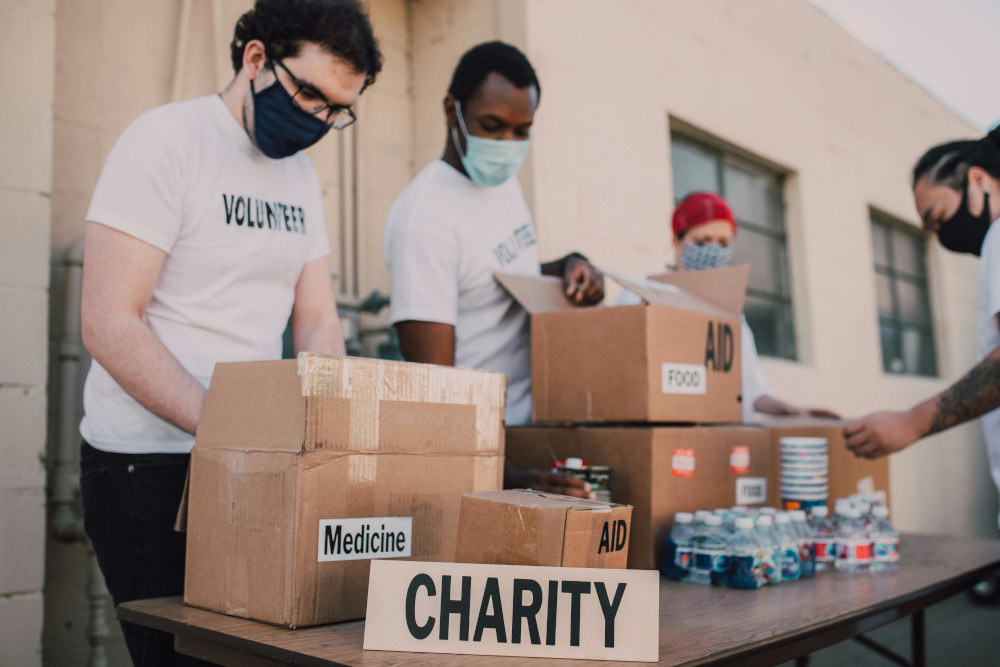
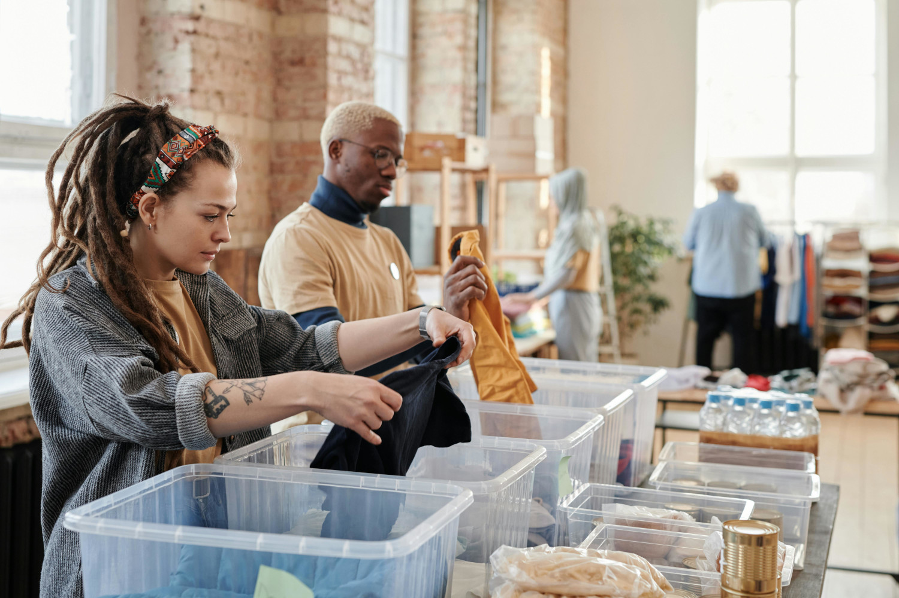

Nossas Causas

Doação de Alimentos
Ajude famílias necessitadas com doações de alimentos e cestas básicas.

Doação de Roupas
Arrecade e distribua roupas para pessoas em situação de vulnerabilidade.

Acessibilidade
Promova a inclusão e acessibilidade para pessoas com deficiência.
Por que ser voluntário?
O voluntariado é uma oportunidade única de contribuir para um mundo melhor. Através do seu tempo e dedicação, você pode:
- Ajudar pessoas em situação de vulnerabilidade
- Desenvolver novas habilidades e competências
- Fazer networking com pessoas engajadas
- Sentir-se realizado(a) fazendo a diferença

Nosso Impacto
0
Voluntários Ativos
0
Famílias Ajudadas
0
Projetos Realizados
0
Comunidades Atendidas
Entre em Contato
Tem dúvidas ou quer saber mais sobre nossa organização? Entre em contato conosco!
contato@voluntarios.org.br
projetos@voluntarios.org.br
Telefone
(11) 3456-7890
WhatsApp: (11) 99876-5432
Endereço
Rua da Solidariedade, 123
Centro - São Paulo/SP
CEP: 01234-567
Horário de Atendimento
Segunda a Sexta: 8h às 18h
Sábados: 8h às 12h
Faça Parte!
Junte-se à nossa causa e ajude a transformar vidas na sua comunidade.
Quero ser Voluntário